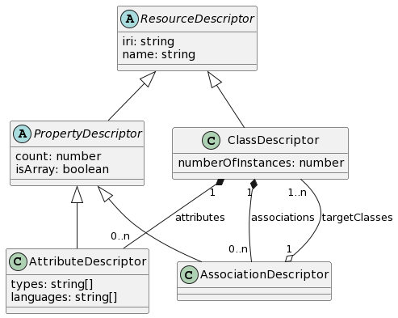

Parsing
Observations made about a SPARQL endpoint are then parsed by
the ObservationParser class. It contains an implementation of an algorithm
which converts RDF observations into descriptors. Descriptors are
plain JavaScript objects which describe the model of the data in the SPARQL
endpoint. They are the stepping stone between the RDF observations,
and creation of the GraphQL schema.
This parsing algorithm is not the only possible parsing algorithm for the observations we are collecting. Observations are simply pieces of information to be interpreted, and there are many ways of interpreting that information. The parsing algorithm implemented is simply one which uses all of the observations SPARQL2GraphQL is currently collecting efficiently. There are currently no plans to let library users specify custom parsing algorithms, but should the need arise, the library design is modular enough to allow it.
Descriptors
This section contains a more thorough explanation of what each descriptor means, and what it says about the underlying data. The following is a class diagram showing all of the currently used descriptors:

ResourceDescriptor
Describes any RDF resource which is identified by
an IRI, i.e. classes and properties. This descriptor also has a name field,
which is meant to contain a GraphQL-compatible, human-readable name,
meaning a string only consisting of characters [_a-zA-Z0-9].
This name is used as the GraphQL identifier for this resource.
After all, it's much easier for humans to read and reason about
Label than http://www.w3.org/2008/05/skos-xl#Label.
interface ResourceDescriptor {
iri: string;
name: string;
}
This descriptor is extended by all other descriptors.
ClassDescriptor
Describes a single class present in the dataset.
interface ClassDescriptor extends ResourceDescriptor {
numberOfInstances: number;
attributes: AttributeDescriptor[];
associations: AssociationDescriptor[];
}
For example, if the dataset contains 5 dogs and 10 cats, we would have the following class descriptors:
[
{
iri: 'http://example.com/Dog',
name: 'Dog',
numberOfInstances: 5,
attributes: [],
associations: [],
},
{
iri: 'http://example.com/Cat',
name: 'Cat',
numberOfInstances: 10,
attributes: [],
associations: [],
}
]
PropertyDescriptor
Describes a property of a class. A property is any relation
in the dataset where the subject is a class. This descriptor is
not instantiated on its own, rather it is always as an instance
of an AssociationDescriptor or an AttributeDescriptor.
interface PropertyDescriptor extends ResourceDescriptor {
count: number;
isArray: boolean;
}
AssociationDescriptor
A special case of a property where its domain is another class. If an association has multiple target classes, its range is their union.
interface AssociationDescriptor extends PropertyDescriptor {
targetClasses: ClassDescriptor[];
}
In our cats and dogs example, let's say each cat has a friend among the dogs. That would be modelled like so:
{
iri: 'http://example.com/Cat',
name: 'Cat',
numberOfInstances: 10,
attributes: [],
associations: [{
iri: 'http://example.com/friend',
name: 'friend',
count: 10,
isArray: false,
targetClasses: [{
iri: 'http://example.com/Dog',
name: 'Dog',
numberOfInstances: 5,
attributes: [],
associations: [],
}],
}],
}
AttributeDescriptor
A special case of a property where its domain is a literal, i.e. a primitive value like a string or an integer.
interface AttributeDescriptor extends PropertyDescriptor {
types: string[];
languages: string[];
}
The types array contains a list of types in this attribute's range.
If the types array contains a language string type, then the languages
array will hold a list of available languages for this language string.